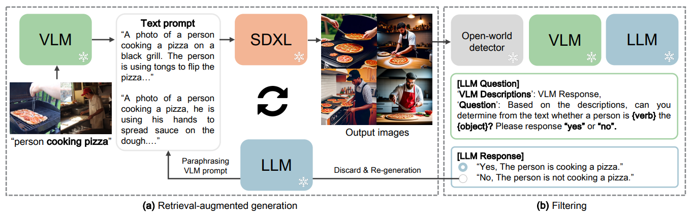
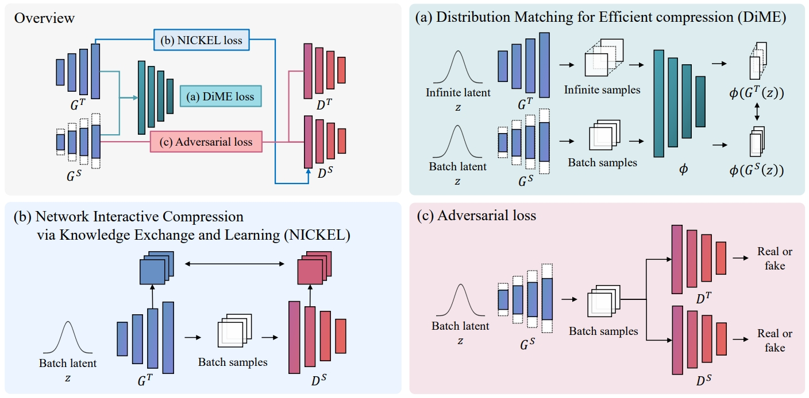
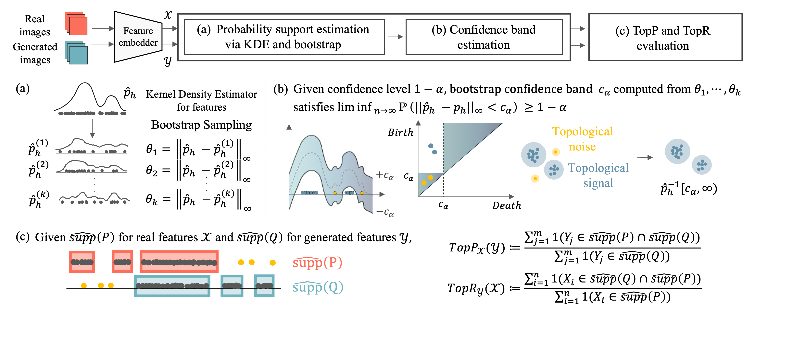
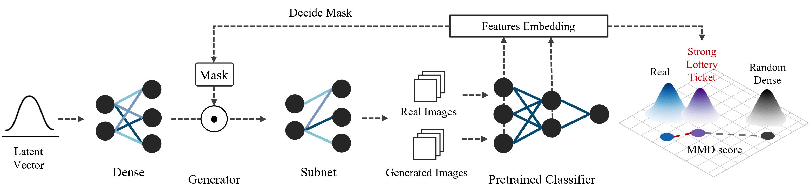

Yoojin Jang
I'm a Ph.D. candidate at LAIT @ UNIST AIGS advised by Prof. Jaejun Yoo .
My research interests are on reproducing natural real-world, especially using image and video generation, robust benchmarks and representation learning, but not limited to.
Email /
Scholar /
Linkedin /
Others 🔊
Research Interests
Image and video generation
Benchmarks
Representation learning
Your browser does not support the video tag.

B-RIGHT: Benchmark Re-evaluation for Integrity in Generalized Human-Object Interaction Testing
Yoojin Jang Junsu Kim* ,
Hayeon Kim ,
Eun-ki Lee ,
Eun-sol Kim ,
Seungryul Baek ,
Jaejun Yoo
(*Equal Contribution)
BMVC , 2025
arXiv /
Code
Your browser does not support the video tag.

Nickel and Diming Your GAN: A Dual-Method Approach to Enhancing GAN Efficiency
via Knowledge Distillation
Sangyeop Yeo ,
Yoojin Jang Jaejun Yoo
ECCV , 2024
project page /
arXiv /
Code
Your browser does not support the video tag.

TopP&R: Robust Support Estimation Approach for Evaluating Fidelity and Diversity in Generative Models
Pum Jun Kim ,
Yoojin Jang Jisu Kim ,
Jaejun Yoo
NeurIPS , 2023
project page /
arXiv /
Code
Your browser does not support the video tag.

Can We Find Strong Lottery Tickets in Generative Models?
Sangyeop Yeo ,
Yoojin Jang Jy-yong Sohn ,
Dongyoon Han ,
Jaejun Yoo
AAAI , 2023 (Oral Presentation)
project page /
arXiv /
Code
{kind=link}